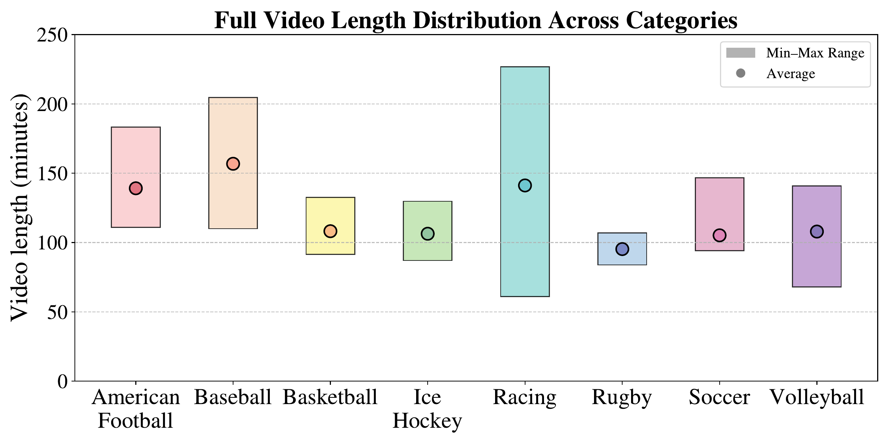
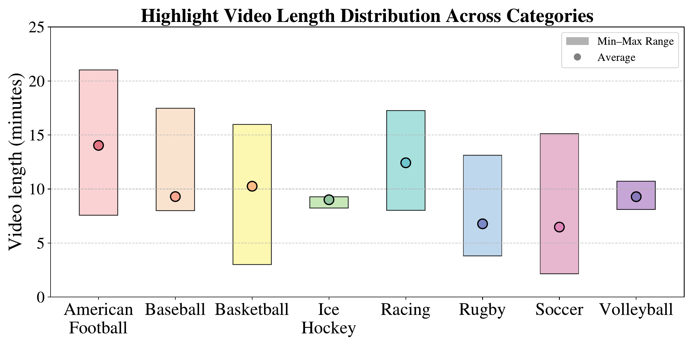
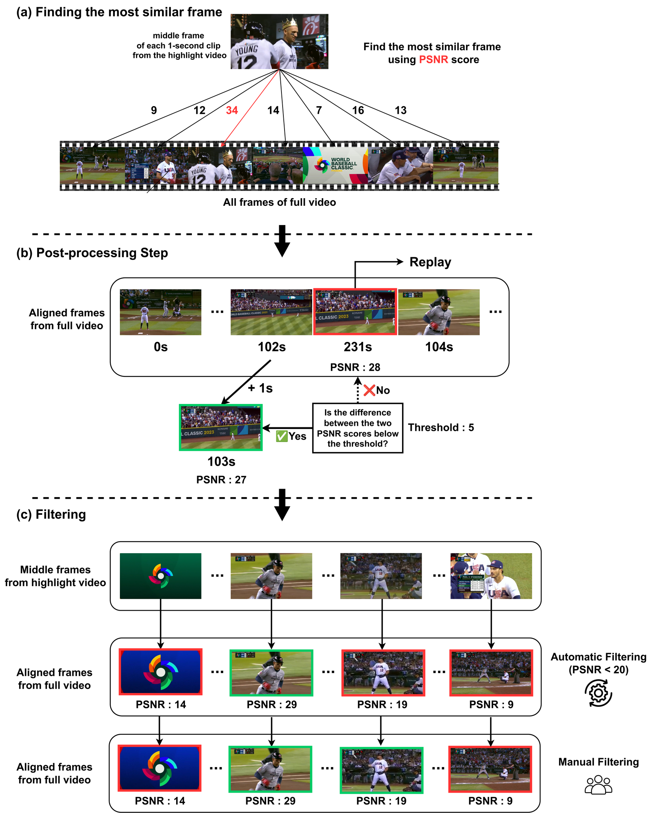
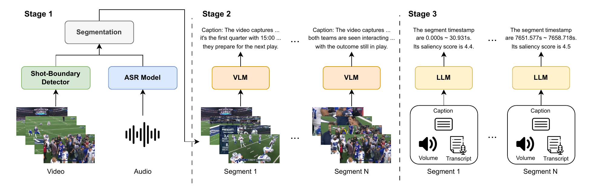

While highlight detection for long-form videos is of great practical importance, most existing methods remain limited to short-form content, largely due to the absence of a suitable benchmark. To bridge this gap, we introduce SVHighlights, to the best of our knowledge, the first benchmark for highlight detection in extremely long sports videos, each exceeding one hour in duration, across multiple sports categories. SVHighlights is constructed from pairs of full-length sports videos and their corresponding official highlight videos using a highlight alignment pipeline, enabling scalable and cost-effective label generation without conventional per-clip saliency annotation. The benchmark comprises 320 videos spanning a wide range of sports, with an average duration of 2.00 hours and a total of 640.18 hours, substantially exceeding previous highlight detection datasets. Beyond the lack of benchmarks, existing methods also face fundamental challenges on long videos: models trained on short clips of only a few minutes fail to generalize to hour-long content, and their clip-level scoring lacks the broader context needed to identify highlights in long-form videos. To address these challenges and provide a strong baseline for SVHighlights, we present TF-SELECTOR, a training-free segment-based approach that divides each video into context-aware segments by merging adjacent shots sharing the same semantic content, and predicts segment-level saliency scores using a large language model (LLM) with multimodal inputs including visual captions, transcripts, and audio volume. Extensive experiments demonstrate that TF-SELECTOR achieves superior performance across most evaluation metrics compared to Video Temporal Grounding (VTG)-tuned baselines, with improvements of +3.12 in HIT@1, +4.06 in HIT@K, and +2.95 in IoU. These results establish SVHighlights as a challenging testbed for long-form highlight detection and demonstrate that a simple segment-based strategy can effectively scale to hour-long videos.
SVHighlights pairs 320 full-length sports broadcasts with their official highlight videos, spanning 8 sports — american football, baseball, basketball, ice hockey, racing, rugby, soccer, and volleyball (40 videos each). The figures below show the duration distribution of the full broadcasts and of their official highlight videos across categories.

Full video length distribution.

Highlight video length distribution.
Rather than relying on manual per-clip annotation, we align each official highlight video to its full-length broadcast. Every 1-second highlight clip is matched to the most similar full-video frame via a pixel-level PSNR score, a post-processing step enforces temporal consistency, and a filtering step removes mismatched frames — yielding highlight labels at scale without costly human scoring.

Each video places the official highlight video (left) next to the full-video frames aligned by our pipeline (right) — for every highlight second, a 1-second clip cut from the full broadcast at the frame our highlight alignment matched. One example is shown per sport.
🏈 American Football
⚾ Baseball
🏀 Basketball
🏒 Ice Hockey
🏁 Racing
🏉 Rugby
⚽ Soccer
🏐 Volleyball
TF-SELECTOR (Training-Free Segment-based Extremely Long video highlight detECTOR) is a training-free baseline with three stages:
